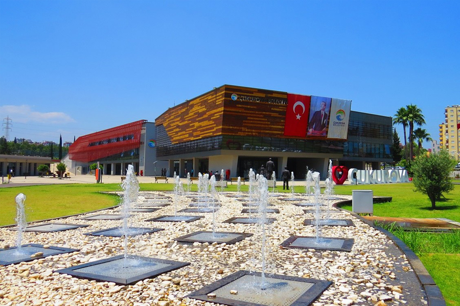
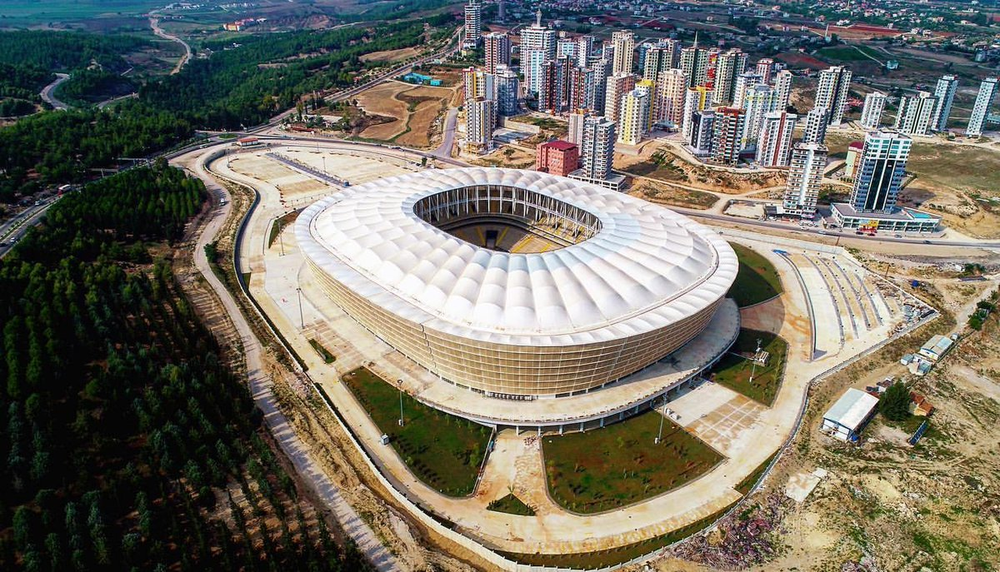
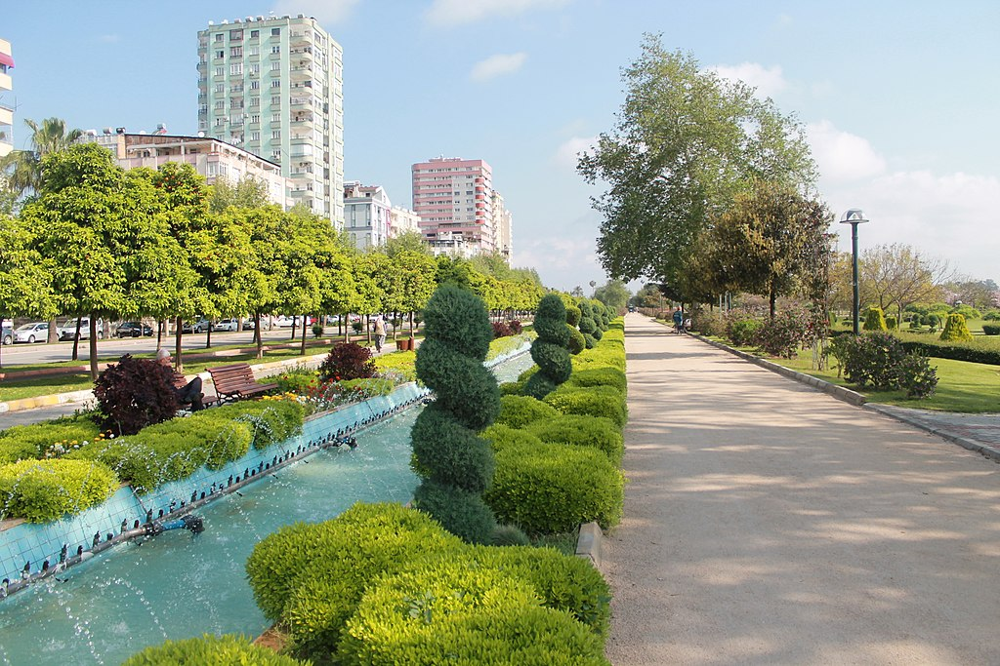
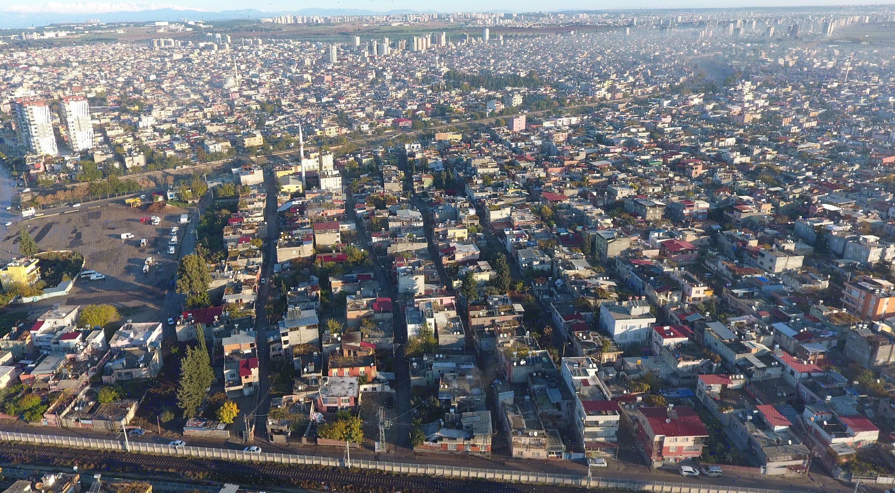
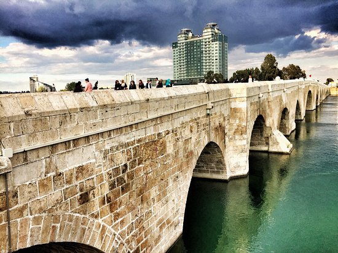

Adana İlinin tarihi ilk çağlara (M.Ö. 3000) yıllarına kadar uzanmaktadır. Adana'nın Seyhan Nehri kıyısına bir konak yeri olarak kurulduğu tahmin edilmektedir. Adana'ya ait en eski yazılı kayıtlara ilk defa, Anadolu'nun en köklü medeniyetlerinden olan Hititlerin Kava Kitabelerinde rastlanmaktadır. Bu kabilelerdeki bir yazıtta Adana ve çevresinden Uru Adania(Adana Beldesi) olarak bahsedilmektedir. Yöreye M.Ö. yaşayan kavimlere Danuna ismi verildiği kayıtlarda mevcuttur. Bir efsaneye göre gök tanrısı Uranüs'ün Adanus ve Sarus adında iki oğlu Adana civarına savaşarak gelmişler, Adanus adını kendi kurdukları şehre vermiştir. Seyhan Nehri de Sarus adını almıştır.
COĞRAFİ BİLGİLER
Adana Toros daglarinin güneyinde yer alan Çukurova'da Seyhan nehri üzerinde kurulmustur. Akdeniz’e yaklasik 160 km'lik kiyisi bulunan Adana Avrupa'yi, Asya'ya baglayan önemli ulasim yollari üzerindedir.
Orta dogu ile kara ve demiryolu baglantisi Adana üzerinden yapilir. Bu baglanti Toroslar'da Gülek Bogazi'ndan saglanir. Il yüzölçümünün % 49 daglik, %23 yaylalar ve %27 ova ve düzlük alandir. Toroslarin etekleri Akdeniz’e dogru ova biçimini alir. Iç Anadoludan dogan Seyhan ve Ceyhan Nehirleri Akdenize akar.
Adana'nın Merkez İlçeleri

ÇUKUROVA
Çukurova, Adana ilinin bir ilçesidir. Çukurova Adana'nın merkez ilçelerinden birisidir. Seyhan'dan ayrılarak ilçe olmuştur. Yüzölçümü 240 km²'dir. Adını Türkiye'de verimli topraklarıyla ünlü olan Çukurova'dan almıştır.

SARIÇAM
Sarıçam ilçesi, Adana ili, Yüreğir ilçesinin Kuzey – Doğu kısmının ayrılması ile Buruk, Sofulu, Baklalı, İncirlik, Suluca ve Kürkçüler alt kademe belediyelerinin tüzel kişilikleri sona erdirilerek 22 Mart 2008 tarihinde oluşturulmuş bir ilçedir. İsmini ilçenin kuzeyinde bulunan Sarıçam ormanlarından almıştır.

SEYHAN
Seyhan, Adana'nın ilk yerleşim alanı olmakla beraber şu anda şehrin yönetim, iş ve kültür merkezidir. Tarihî Tepebağ mahallesi ve Büyük Saat, Ulu Camii, Ramazaoğlu Konağı ve Sabancı Merkez Camii gibi önemli yapıları bünyesinde barındırmaktadır.

YÜREĞİR
Adana'nın merkez ilçesi olan Yüreğir, 5 Haziran 1986'da belediye olmuştur. İsmini 1250-1352 yılları arasında Türk Oğuz boyundan Üçoklara ait kavmin buraya yerleşmesinden dolayı almıştır. Adana'nın en çok göç alan ilçesidir.
KÜLTÜREL BİLGİLER
Seyhan ve Ceyhan Nehirlerinin suladığı verimli topraklar ve coğrafi konumu nedeni ile tarih öncesi çağlardan günümüze kadar değişik Medeniyetlerin hüküm sürdüğü Çukurova’nın kültürünü bu uygarlıklar oluşturmuştur.Çukurova’da hüküm sürmüş Uygarlıkların etkileri Adana'nın kültür yaşamında kendini göstermektedir. Bir kültür mozaiğine dönüşen Adan ve Çukurova kültürünü önemli şekilde etkileyen gruplar özellikle göçebe Türkmen ve Yörük aşiretleridir.
Örnek olarak aşağıdaki videoda Adananın sahip olduğu kültürel yapıyı izleyebilirsiniz.
Adana Mimarisi
Adana mimarisinin altın çağı 15. yüzyılın sonları ve Ramazanoğulları'nın Adana'yı başkenti olarak seçtiği 16. yüzyıldır. Şehir o dönemde birçok yeni mahallelerin kurulmasıyla beraber süratle büyür. Adana'nın tarihi açıdan dönüm noktası sayılabilecek birçok yapısı bu dönemde inşa edildiği için Memlüklü ve Selçuklu mimarisi Adana'nın mimarlık tarihinde önemli bir yer tutar.
Tepebağ Evleri
Tepebağ Höyüğü ’nü diğerlerinden ayıran en önemli özelliği şehir merkezinde kalması ve zamanla eski katmanların üzerine yeni yapıların yapılmasıdır. Günümüzde Tepebağ Evlerinin altında bu höyük yer almaktadır. 8000 yıllık olan Tepebağ Höyüğü’nün yerleşim yeri olarak tercih edilmesinin en önemli nedenlerinden birisi Adana kent merkezindeki tek yükselti olmasıdır.

TAŞ KÖPRÜ
Adana'nın simgesi olarak kabul edilen köprü, bir Roma dönemi eseridir. Taşköprü'nün Roma İmparatoru Hadrianus tarafından yaptırıldığı ve Roma İmparatoru I. Justinianus zamanında ciddi şekilde onarıldığı aktarılmaktadır.310 metre uzunluğundaki köprünün genişliği 11.40 metredir. Ayrıca Taşköprü dünyada hâlen kullanılan en eski köprülerden biridir.
Adana Mutfağı
Adana mutfağı birbirinden farklı yemekler, kebaplar, kahvaltılık ve hamur işleri ile ülkemizin ünlü mutfaklarından biridir. Her yörenin kendine has lezzetleri olmasında kültürün, coğrafyanın ve tarihin büyük etkileri vardır. Adana’nın yöresel lezzetlerini ortaya çıkaran faktörler de bunlardan ibaret. Dağlık alanlarının yanı sıra deniz ile bağdaşan coğrafyası, geçmişten bugüne göç dalgalarının bir merkezi olması gibi faktörler Adana mutfağını zenginleştirmiştir.
Adana Kebap
Adana kebabı, şehrin adını en çok duyurduğu bugün ülkemizin dört bir yanında restoranlarda Adana dürüm, Adana kebap olarak menülere giren lezzetidir. Adana’nın meşhur lezzeti Adana kebabını her yerde deneyimleyebilirsiniz ancak gerçek anlamda bir Adana kebap yemek isterseniz rotanızı kebabın ana vatanı olan Adana’ya yöneltmelisiniz. Adana’nın dürümcülerinde ve restoranlarında kolayca bulabileceğiniz Adana kebap acılı ve acısız seçenekleri ile müşterilere sunuluyor.
Şırdan Dolması
Şırdan dolması, Adana dendiğinde akla ilk gelen yöresel lezzetlerden biri olarak biliniyor. Yöre halkının sürekli tükettiği ve genellikle kuzu şırdanından yapılan bu dolmanın tarifi de yine Adana’ya özel olan bir tariftir. Yolunuz düşer de Adana’da bulunursanız mutlaka şırdan dolması deneyimleyebileceğiniz restoranlara uğramalısınız.
Daha fazla Adana lezzetleri hakkında bilgi sahibi olmak istiyorsanız yukarıdaki videoyu izleyebilirsiniz.

 Adana kebabı, şehrin adını en çok duyurduğu bugün ülkemizin dört bir yanında restoranlarda Adana dürüm, Adana kebap olarak menülere giren lezzetidir. Adana’nın meşhur lezzeti Adana kebabını her yerde deneyimleyebilirsiniz ancak gerçek anlamda bir Adana kebap yemek isterseniz rotanızı kebabın ana vatanı olan Adana’ya yöneltmelisiniz. Adana’nın dürümcülerinde ve restoranlarında kolayca bulabileceğiniz Adana kebap acılı ve acısız seçenekleri ile müşterilere sunuluyor.
Adana kebabı, şehrin adını en çok duyurduğu bugün ülkemizin dört bir yanında restoranlarda Adana dürüm, Adana kebap olarak menülere giren lezzetidir. Adana’nın meşhur lezzeti Adana kebabını her yerde deneyimleyebilirsiniz ancak gerçek anlamda bir Adana kebap yemek isterseniz rotanızı kebabın ana vatanı olan Adana’ya yöneltmelisiniz. Adana’nın dürümcülerinde ve restoranlarında kolayca bulabileceğiniz Adana kebap acılı ve acısız seçenekleri ile müşterilere sunuluyor.